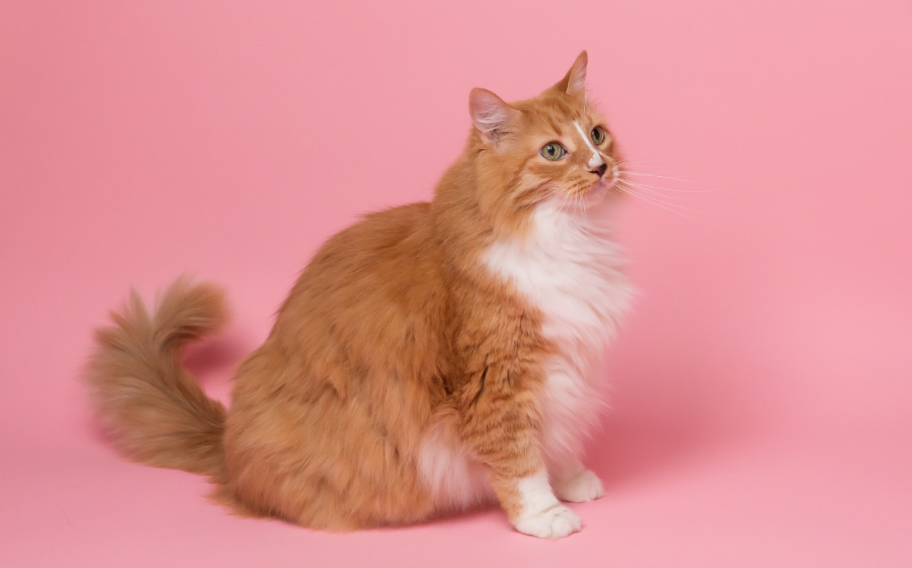

How to care for long-hair?
They are gorgeous to look at and you can’t help wanting to stroke them all
the time. Long haired cats are the archetypally beautiful cat breed. For all
cat-lovers who like long haired cats, Persian cats are naturally the first
choice. They have far and away the longest hair.